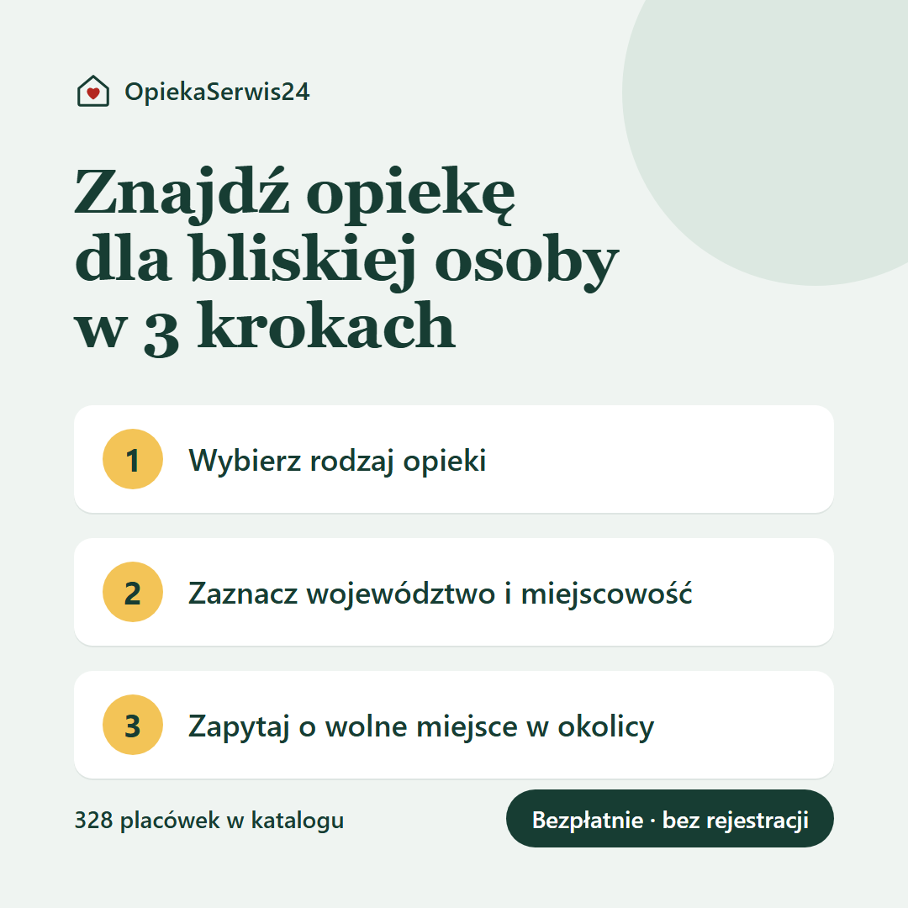

Post 1 · rodziny
Jak zacząć szukać opieki
Szukasz opieki dla mamy, taty albo innej bliskiej osoby i nie wiesz, od czego zacząć?
W OpiekaSerwis24 w jednym miejscu znajdziesz domy opieki, DPS-y, hospicja, opiekę domową i opiekunki z całej Polski.
- Wybierz rodzaj opieki.
- Zaznacz województwo i miejscowość.
- Sprawdź placówki w okolicy i zapytaj o wolne miejsce.
Bezpłatnie i bez rejestracji.
👉 link do wyszukiwarki